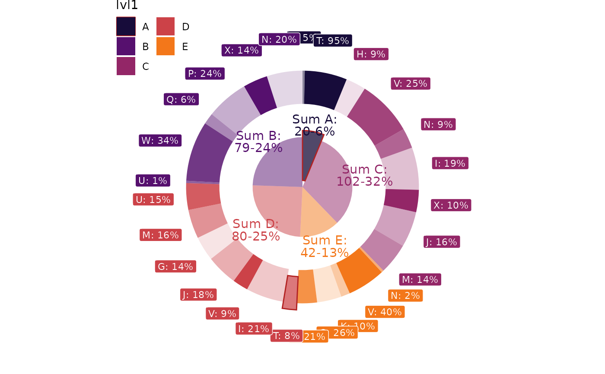
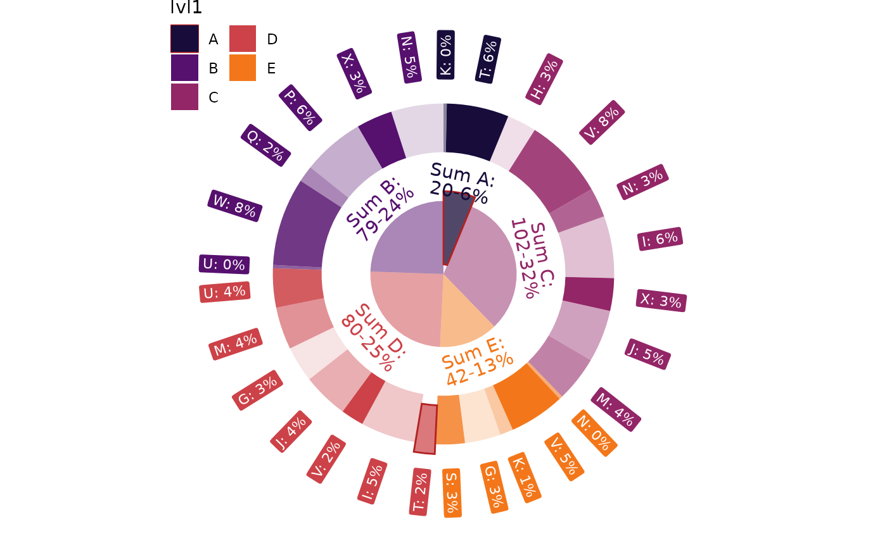
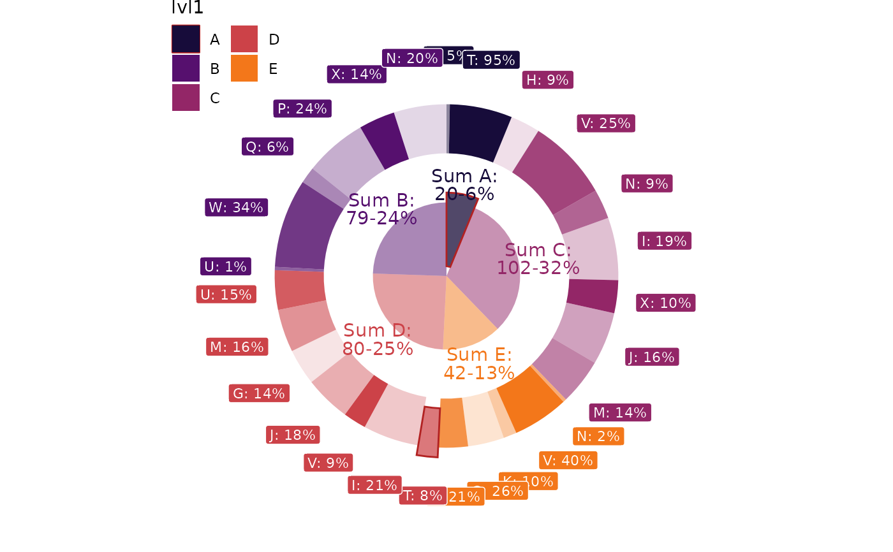
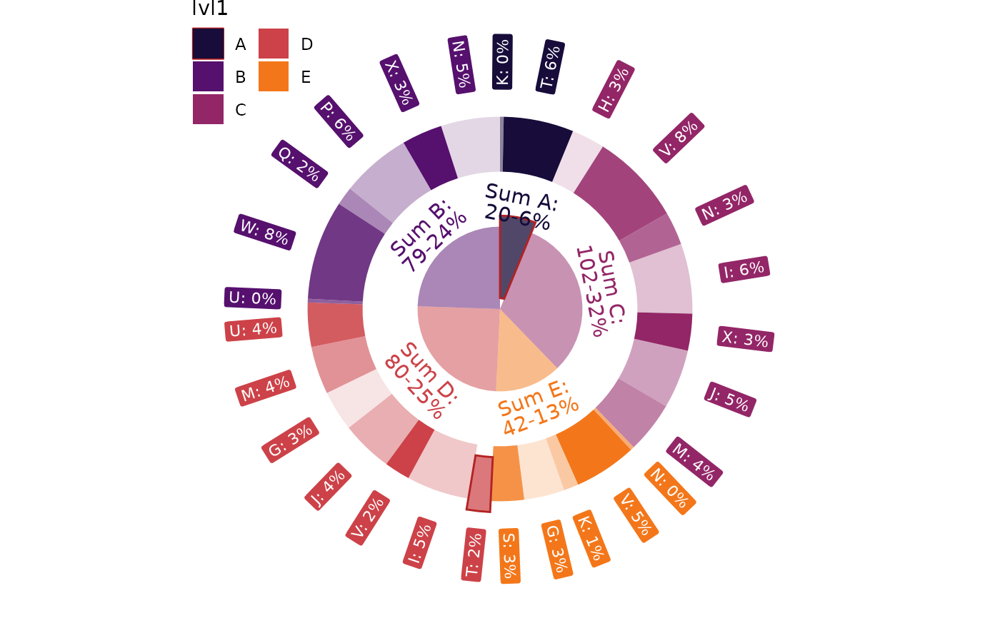

The set of annotation functions utilizes layout functions to effectively distribute labels within the available space
Annotations are streamlined by leveraging pre-calculated special variables such as .sum, .mean, and .n (see Details).
The function
geom_label_int()createsgeom_label-like internal donut layer as aggregation of passed valuesThe function
geom_text_int()createsgeom_text-like internal donut layer as aggregation of passed valuesThe function
geom_label_ext()createsgeom_label-like external donut layer of passed valuesThe function
geom_text_ext()createsgeom_text-like external donut layer of passed values
Usage
geom_label_int(
mapping = NULL,
data = NULL,
stat = "label_int",
position = "identity",
na.rm = FALSE,
show.legend = NA,
inherit.aes = TRUE,
r = 1,
...
)
geom_text_int(
mapping = NULL,
data = NULL,
stat = "text_int",
position = "identity",
na.rm = FALSE,
show.legend = NA,
inherit.aes = TRUE,
r = 1,
...
)
geom_label_ext(
mapping = NULL,
data = NULL,
stat = "label_ext",
position = "identity",
na.rm = FALSE,
show.legend = NA,
inherit.aes = TRUE,
layout = circle(),
...
)
geom_text_ext(
mapping = NULL,
data = NULL,
stat = "text_ext",
position = "identity",
na.rm = FALSE,
show.legend = NA,
inherit.aes = TRUE,
layout = circle(),
...
)Format
An object of class StatLabelInt (inherits from Stat, ggproto, gg) of length 3.
An object of class StatTextInt (inherits from Stat, ggproto, gg) of length 3.
An object of class StatLabelExt (inherits from Stat, ggproto, gg) of length 3.
An object of class StatTextExt (inherits from Stat, ggproto, gg) of length 3.
Arguments
- mapping
Set of aesthetic mappings created by
aes(). If specified andinherit.aes = TRUE(the default), it is combined with the default mapping at the top level of the plot. You must supplymappingif there is no plot mapping.- data
The data to be displayed in this layer. There are three options:
If
NULL, the default, the data is inherited from the plot data as specified in the call toggplot().A
data.frame, or other object, will override the plot data. All objects will be fortified to produce a data frame. Seefortify()for which variables will be created.A
functionwill be called with a single argument, the plot data. The return value must be adata.frame, and will be used as the layer data. Afunctioncan be created from aformula(e.g.~ head(.x, 10)).- stat
The statistical transformation to use on the data for this layer, either as a
ggprotoGeomsubclass or as a string naming the stat stripped of thestat_prefix (e.g."count"rather than"stat_count")- position
Position adjustment, either as a string, or the result of a call to a position adjustment function. Cannot be jointly specified with
nudge_xornudge_y.- na.rm
If
FALSE, the default, missing values are removed with a warning. IfTRUE, missing values are silently removed.- show.legend
logical. Should this layer be included in the legends?
NA, the default, includes if any aesthetics are mapped.FALSEnever includes, andTRUEalways includes. It can also be a named logical vector to finely select the aesthetics to display.- inherit.aes
If
FALSE, overrides the default aesthetics, rather than combining with them. This is most useful for helper functions that define both data and aesthetics and shouldn't inherit behaviour from the default plot specification, e.g.borders().- r
Sets the radius to place label or text for internal donut
- ...
Other arguments passed on to
layer(). These are often aesthetics, used to set an aesthetic to a fixed value, likecolour = "red"orsize = 3. They may also be parameters to the paired geom/stat.- layout
The layout function to effectively display text and labels
Details
The label functions supports glue::glue() for convenient label construction like Total: {.sum},
where .sum is pre-calculated variable. You can still use glue::glue() or paste()
functions to pass data.frame fields for label construction.
In addition to generic aesthetics like color, fill, alpha, etc., the following list of pre-calculated variables
is available for geom_label_int() and geom_text_int():
.sum: Summation of the value field.mean: Mean of the value field.median: Median of the value field.n: Observation count of the value field.prc: Percentage of the value field
For geom_label_ext() and geom_text_ext(), which are suitable for external donut labels, the following list of
pre-calculated variables is available:
.prc: Percentage of the value field for the entire multiplicity.prc_grp: Percentage of the value field for the group defined byfill
Examples
# Create an example data set
n <- 30
set.seed(2021)
df <- dplyr::tibble(
lvl1 = sample(LETTERS[1:5], n, TRUE),
lvl2 = sample(LETTERS[6:24], n, TRUE),
value = sample(1:20, n, TRUE),
highlight_ext = sample(c(FALSE,TRUE), n, TRUE, c(.9, .1))) |>
dplyr::mutate(highlight_int = dplyr::if_else(lvl1 == "A", TRUE, FALSE))
# Starting plot with doubled donuts and annotations for internal one
p <- dplyr::group_by(df, lvl1, lvl2, highlight_ext, highlight_int) |>
dplyr::summarise(value = sum(value), .groups = "drop") |>
packing(value, lvl1) |>
ggplot(aes(value = value, fill = lvl1)) +
geom_donut_int(aes(highlight = highlight_int), alpha=.5, r_int=.25) +
geom_text_int(lineheight = .8, r=1.2, show.legend = FALSE,
aes(label = "Sum {fill}:\n{.sum}-{scales::percent(.prc)}", col=lvl1)) +
geom_donut_ext(aes(opacity = lvl2, highlight = highlight_ext)) +
scale_fill_viridis_d(option = "inferno", begin = .1, end = .7) +
scale_color_viridis_d(option = "inferno", begin = .1, end = .7) +
guides(alpha=guide_legend(ncol = 2), fill=guide_legend(ncol = 2)) +
theme_void() +
theme(legend.position = "inside", legend.position.inside = c(0.1, 0.9))
p + coord_radial(theta = "y", expand = FALSE, rotate_angle = FALSE)
 # Add labels to external donut as percent inside group
p + coord_radial(theta = "y", expand = FALSE, rotate_angle = FALSE) +
geom_label_ext(aes(label=paste0(lvl2, ": {scales::percent(.prc_grp)}")),
show.legend = FALSE, size=3, col="white")

# Leverage ggplot2 feature for labels
p + coord_radial(theta = "y", expand = FALSE, rotate_angle = TRUE) +
geom_label_ext(aes(label=paste0(lvl2, ": {scales::percent(.prc)}")),
show.legend = FALSE, size=3, col="white", angle=90,
layout = circle())

# Leverage another layout
p + coord_radial(theta = "y", expand = FALSE, rotate_angle = FALSE) +
geom_label_ext(aes(label=paste0(lvl2, ": {scales::percent(.prc_grp)}")),
show.legend = FALSE, size=3, col="white",
layout = tv(thinner = TRUE, thinner_gap = 0.15))
# Add labels to external donut as percent inside group
p + coord_radial(theta = "y", expand = FALSE, rotate_angle = FALSE) +
geom_label_ext(aes(label=paste0(lvl2, ": {scales::percent(.prc_grp)}")),
show.legend = FALSE, size=3, col="white")

# Leverage ggplot2 feature for labels
p + coord_radial(theta = "y", expand = FALSE, rotate_angle = TRUE) +
geom_label_ext(aes(label=paste0(lvl2, ": {scales::percent(.prc)}")),
show.legend = FALSE, size=3, col="white", angle=90,
layout = circle())

# Leverage another layout
p + coord_radial(theta = "y", expand = FALSE, rotate_angle = FALSE) +
geom_label_ext(aes(label=paste0(lvl2, ": {scales::percent(.prc_grp)}")),
show.legend = FALSE, size=3, col="white",
layout = tv(thinner = TRUE, thinner_gap = 0.15))